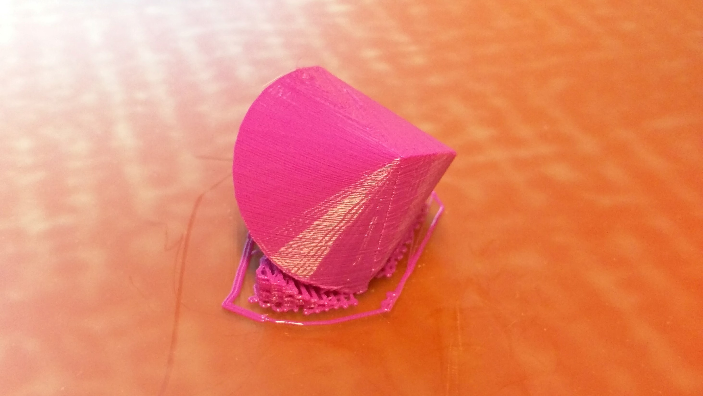
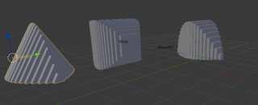
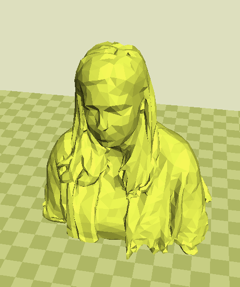
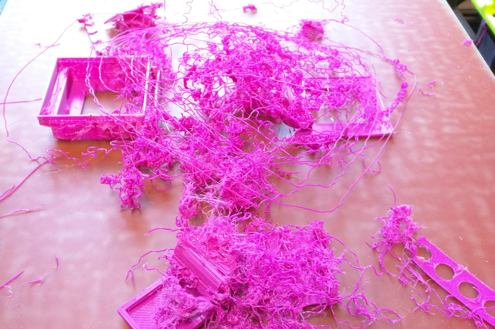
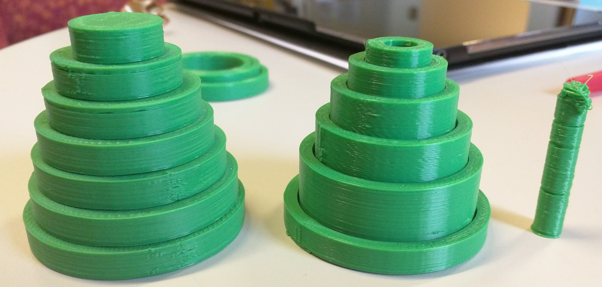
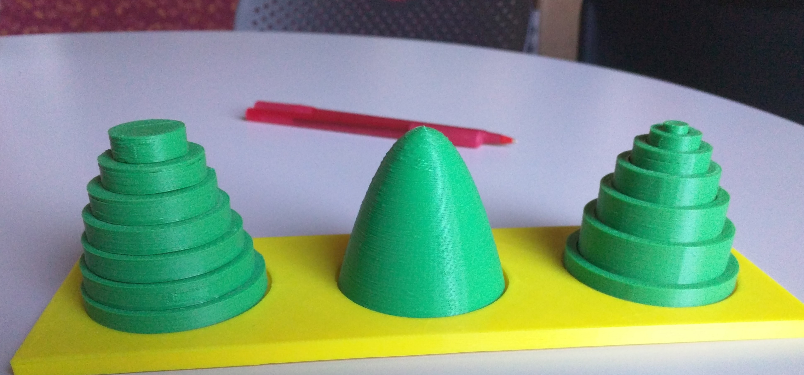
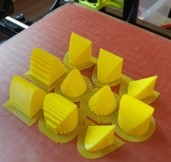
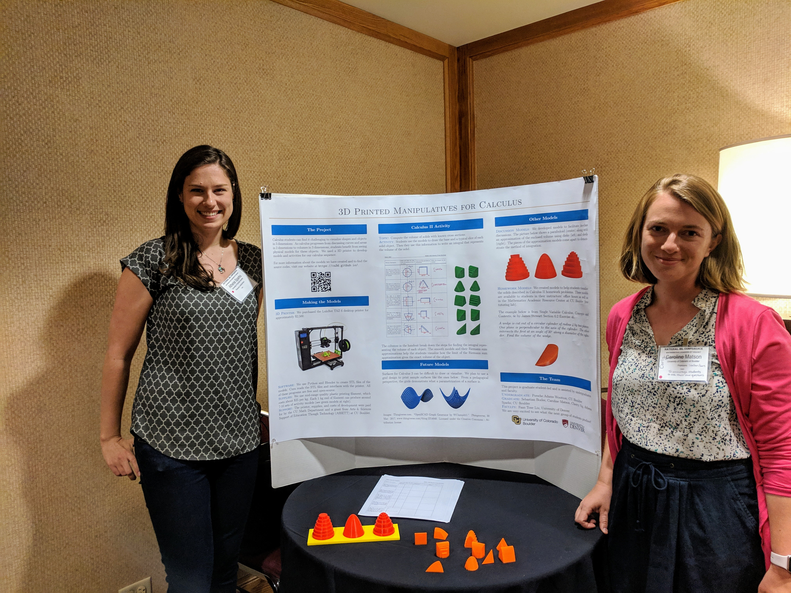

| 3D Printing Program | A team of graduate students (Carly Matson, Athena Pelfrey, and I) together with faculty supervisor Dr. Faan Tone Liu, were awarded a grant from Arts & Sciences Support of Eduation through Technology (ASSETT) to develop 3D-printed teaching materials and resources for the Math Department. Together with matching funds from the department, we designed and printed activities that are still used by Calculus classes at CU today. Here are some highlights from the adventure! |
| We started by printing objects from pre-made models that we found on the internet. This object is an oloid (it rolls funny!) | |
| We learned to use 3D modeling software to build our own models. (Left) Models for demonstrating how to calculate volumes of solids by taking cross-sections. (Right) Model generated by scanning a person with Xbox Kinect.   | |
| The early days were full of printer mishaps and quality issues. (Left) This is our spaghetti factory. (Right) The thin rod is severely misprinted at the top.  | |
| Here are some of the finished products! (Left) Model for demonstrating how to compute volume using the method of washers or method of cylindrical shells. (Right) These yellow solids are part of a project written by Athena Pelfrey. In this project, students practice computing volumes of solids by matching the printed objects with mathematical descriptions. See the associated worksheet here: (Solids of Known Cross Sections Worksheet)  | |
| We held a workshop for the department so that anyone could print their own objects! Here's the manual that we produced: (Manual for Printing at CU) | |
| Carly Matson and Athena Pelfrey also presented a poster about the outcome this project at the National IBLT Conference 2019. Here's the poster: (IBL Poster) The project and remaining funds were passed to other graduate students in 2019 | |
| Graphing with TikZ | Here's a .tex file with several useful methods for graphing with TikZ |
| PDF output and LaTeX code | |
| Algebra Prelim Cards | I wrote a set of flash cards for the Algebra Prelim at CU Boulder. Albany Thompson also made some improvements, and that version is the one shared here. |
| PDF output and LaTeX code |